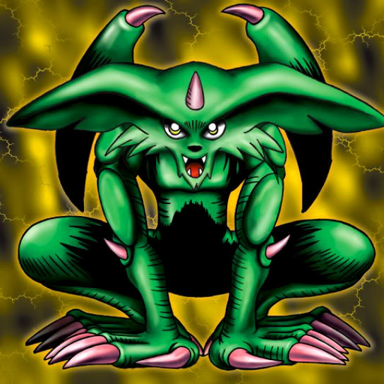

Feral Imp

STATS
ATK: 1300
DEF: 1400
DECK COST
Deck Cost per Card: 27
Fusion List (2 Possible Fusions)
Feral Imp + Ancient One of the Deep Forest = Chimera the Flying Mythical Beast
Feral Imp + Queen of Autumn Leaves = Rose Spectre of Dunn